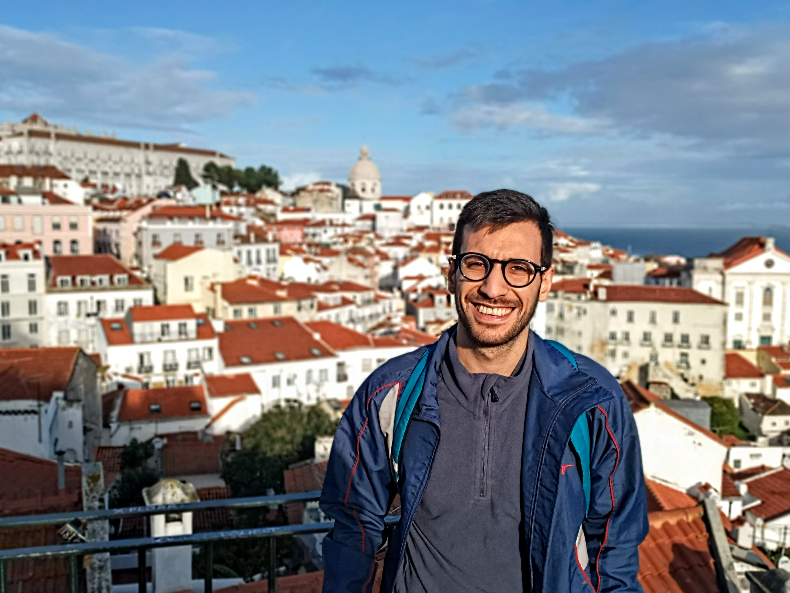

Lucas Villagra Torcomian
Mathematician · Number Theory

Welcome! I am Lucas Villagra Torcomian, and this is my webpage.
I am an Argentinian mathematician. Since July 2026, I have been a Marie Skłodowska–Curie Fellow at the University of Aveiro, under the project No. 101270191.
Previously, I was a PIMS-Simons Postdoctoral Fellow at Simon Fraser University, where I worked with Imin Chen.
I received my Ph.D. in Mathematics from the Universidad Nacional de Córdoba in 2023, under the supervision of Ariel Pacetti.
Curriculum VitaeContact
Email
lucas.villagra [at] unc [dot] edu [dot] ar
Office
11.3.37